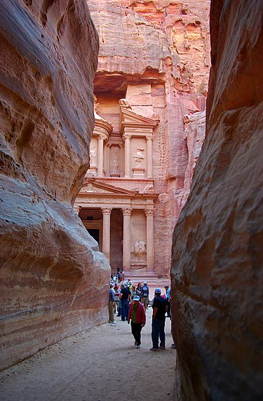
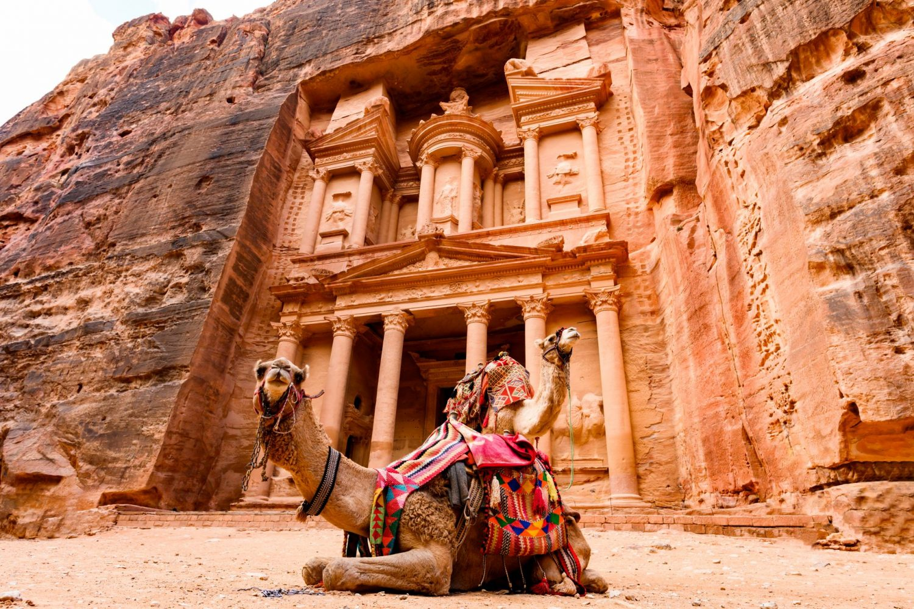
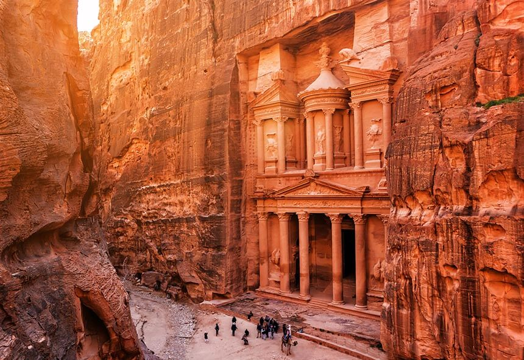

|  |  |  |
Petra is a historic and archaeological city in southern Jordan. It is adjacent to the mountain of Jabal Al-Madbah, in a basin surrounded by mountains forming the eastern flank of the Arabah valley running from the Dead Sea to the Gulf of Aqaba. The area around Petra has been inhabited from as early as 7000 BC, and the Nabataeans might have settled in what would become the capital city of their kingdom, as early as the 4th century BC. Archaeological work has only discovered evidence of Nabataean presence dating back to the second century BC, by which time Petra had become their capital. The Nabataeans were nomadic Arabs who invested in Petra's proximity to the incense trade routes by establishing it as a major regional trading hub.
The trading business gained the Nabataeans considerable revenue and Petra became the focus of their wealth. The Nabataeans were accustomed to living in the barren deserts, unlike their enemies, and were able to repel attacks by taking advantage of the area's mountainous terrain. They were particularly skillful in harvesting rainwater, agriculture and stone carving. Petra flourished in the 1st century AD, when its famous Al-Khazneh structure – believed to be the mausoleum of Nabataean king Aretas IV – was constructed, and its population peaked at an estimated 20,000 inhabitants.
Although the Nabataean kingdom became a client state of the Roman Empire in the first century BC, it was only in 106 AD that it lost its independence. Petra fell to the Romans, who annexed Nabataea and renamed it as Arabia Petraea. Petra's importance declined as sea trade routes emerged, and after an earthquake in 363 destroyed many structures. In the Byzantine era several Christian churches were built, but the city continued to decline, and by the early Islamic era it was abandoned except for a handful of nomads. It remained unknown to the West until it was rediscovered in 1812 by Johann Ludwig Burckhardt
Access to the city is through a 1.2-kilometre-long gorge called the Siq, which leads directly to the Khazneh. Famous for its rock-cut architecture and water conduit system, Petra is also called the "Red Rose City" because of the colour of the stone from which it is carved. It has been a UNESCO World Heritage Site since 1985. UNESCO has described Petra as "one of the most precious cultural properties of man's cultural heritage". In 2007, Al-Khazneh was voted one of the New 7 Wonders of the World. Petra is a symbol of Jordan, as well as Jordan's most-visited tourist attraction. Tourist numbers peaked at 918,000 in 2010, but there followed a temporary slump during the political instability generated by the Arab Spring, which affected countries surrounding Jordan. Visitor numbers subsequently increased and reached a record-breaking 1.1 million tourists in 2019, marking the first time that the figure rose above the 1 million mark. Tourism in the city was crippled by the COVID-19 pandemic as visitor numbers plummeted to zero since March 2020. The Jordanian government has authorized excavations in front of the treasury to make use of the site's emptiness.